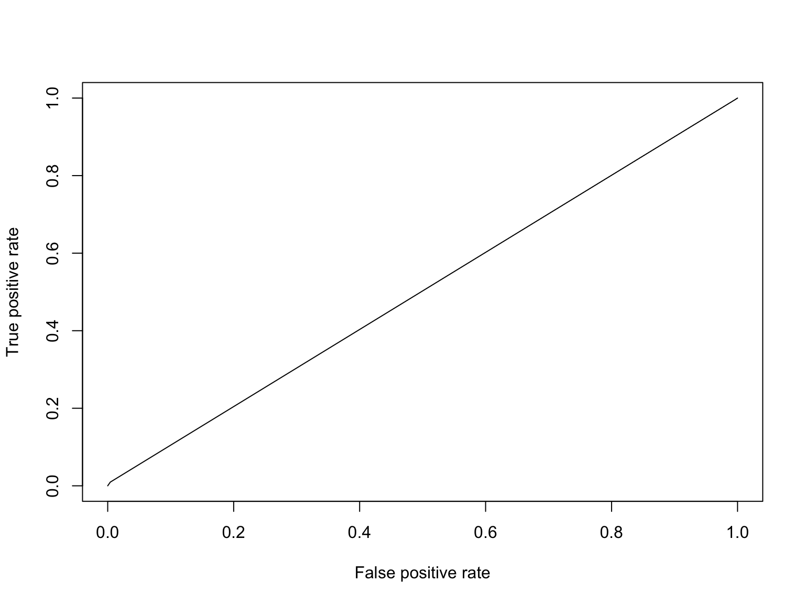
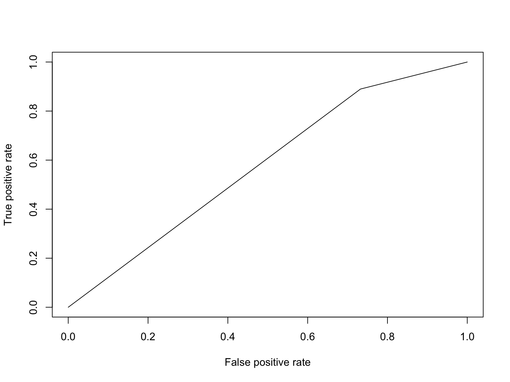
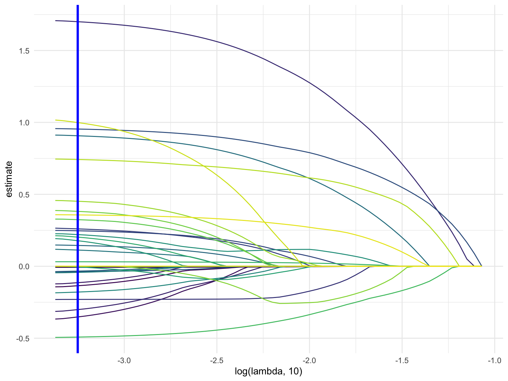
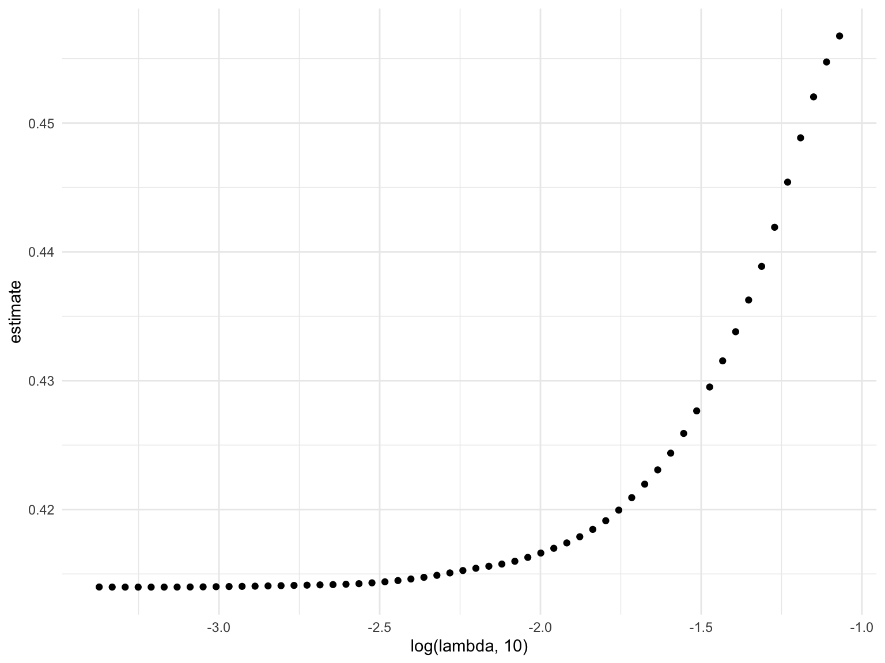
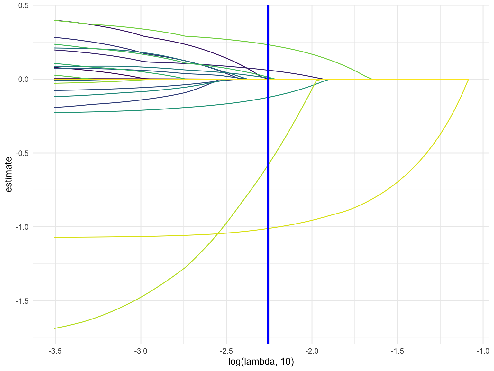
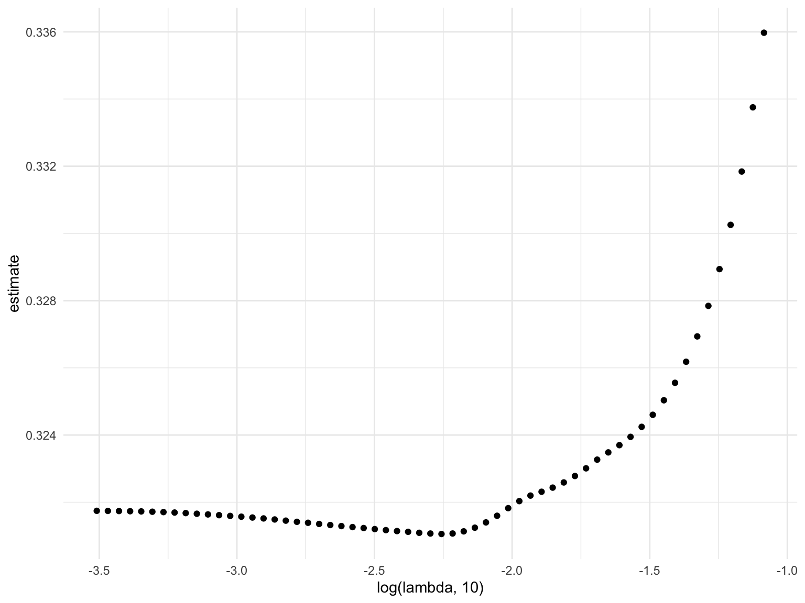
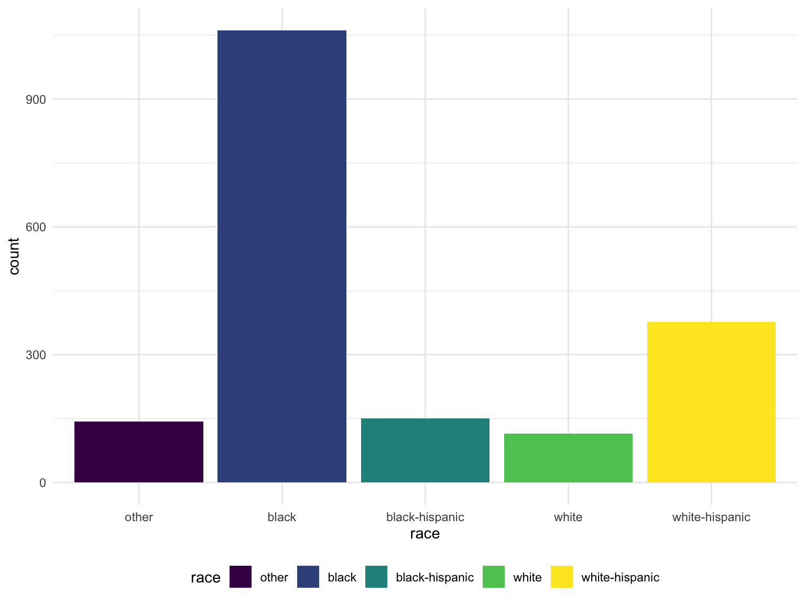

Group 13 Final Project
cs3779, kd2640, ob2305, mp3745, lef2147
2019-12-03
Rough Outline of Project:
- Describe the goal/motivation of the project; have some stats and facts to explain our purpose in investigating this dataset
- Describe the dataset: where is it from, what does it contain
- Review the questions we intend on answering
- Exploratory Data Analysis
- Give an overview of the demographics of our dataset, any conclusion we make is only relevant to those who were stopped which is why it is good to give an idea of who is represented
- histogram of race/build/etc.
- distribution of continuous variables
- Logistic Regression
- odds of frisked
- odds of arrest
- Trends over time
- could maybe find a way to test this, i.e. linear regression, is the slope equal to zero, or something of that nature. the plot shows a funnel pattern so maybe we could look into that more
- other things
- Findings/Discussion
Read in and tidy the data
The following code:
- Reads in the data
- Renames columns to be more informative
- Combines height columns into a single height in inches
- Converts date_stop to date data type
- Converts time_stop to time data type
- Recodes the values in categorical columns to be more informative
- Selects column subset for further analysis
# Read in data
stop_frisk_df =
# Read in data from internet
GET("https://www1.nyc.gov/assets/nypd/downloads/excel/analysis_and_planning/stop-question-frisk/sqf-2016.csv") %>%
content("parsed") %>%
# Clean and fix names of columns
janitor::clean_names() %>%
rename(
precinct = pct,
date_stop = datestop,
time_stop = timestop,
stop_in_out = inout,
obs_time_min = perobs,
stop_time_min = perstop,
arst_made = arstmade,
off_in_unif = offunif,
hair_col = haircolr,
eye_col = eyecolor,
other_feature = othfeatr,
boro = city
) %>%
mutate(
# Combine height columns
height_inch = ht_feet * 12 + ht_inch,
# Convert date to proper format
date_stop = mdy(date_stop),
# Convert time to proper format
time_stop = hm(time_stop / 100),
# Recode to be more informative
stop_in_out = recode(stop_in_out, "I" = "inside", "O" = "outside"),
race = recode(
race,
"A" = "asian/pacific islander",
"B" = "black",
"I" = "american indian/alaska native",
"P" = "black-hispanic",
"Q" = "white-hispanic",
"W" = "white",
"U" = "unknown",
"Z" = "other"
),
hair_col = recode(
hair_col,
"BA" = "bald",
"BK" = "black",
"BL" = "blond",
"BR" = "brown",
"DY" = "dyed",
"FR" = "frosted",
"GY" = "gray",
"RA" = "red",
"SN" = "sandy",
"SP" = "salt and pepper",
"WH" = "white",
"XX" = "unknown",
"ZZ" = "other",
),
eye_col = recode(
eye_col,
"BK" = "black",
"BL" = "blue",
"BR" = "brown",
"DF" = "different",
"GR" = "green",
"GY" = "gray",
"HA" = "hazel",
"MA" = "maroon",
"PK" = "pink",
"VI" = "violet",
"XX" = "unknown",
"Z" = "other",
),
build = recode(
build,
"H" = "heavy",
"M" = "medium",
"T" = "thin",
"U" = "muscular",
"Z" = "unknown"
),
# change boro columns to lowercase for consistency
boro = tolower(boro),
# change character datatypes to numeric
age = as.numeric(age),
obs_time_min = as.numeric(obs_time_min),
stop_time_min = as.numeric(stop_time_min)
) %>%
# select columns for further analysis
select(precinct, date_stop, time_stop, stop_in_out, obs_time_min, stop_time_min, arst_made, off_in_unif, frisked,
searched, rf_vcrim, rf_othsw, rf_attir:ac_evasv, cs_furtv:cs_other, rf_knowl, sb_hdobj:sb_admis, rf_furt,
rf_bulg, sex, race, age, height_inch, weight:build, boro, xcoord, ycoord) %>%
# change all columns that have Y/N to 1/0
mutate_at(vars(arst_made:rf_bulg), funs(recode(., "Y" = "1", "N" = "0"))) %>%
# change binary columns to numeric instead of character
mutate_at(vars(arst_made:rf_bulg), funs(as.numeric(.))) %>%
# converts all character variables to factors (this does the same as the for loop)
mutate_if(is.character, as.factor) %>%
# remove the single row of NAs
filter(!is.na(build))Evaluating Missing Data and Categorical Data
table(stop_frisk_df$race)##
## american indian/alaska native asian/pacific islander
## 38 737
## black black-hispanic
## 6498 873
## other unknown
## 140 95
## white white-hispanic
## 1270 2753table(stop_frisk_df$hair_col)##
## bald black blond brown
## 391 9046 143 2323
## dyed gray other red
## 4 125 59 39
## salt and pepper sandy unknown
## 74 2 198table(stop_frisk_df$eye_col)##
## black blue brown different gray green hazel
## 955 206 10839 1 14 103 113
## other unknown
## 54 119table(stop_frisk_df$build)##
## heavy medium muscular thin unknown
## 1209 5470 133 5382 210# we should consider consolidating categories
colSums(is.na(stop_frisk_df))## precinct date_stop time_stop stop_in_out obs_time_min
## 0 0 0 0 0
## stop_time_min arst_made off_in_unif frisked searched
## 23 0 0 0 0
## rf_vcrim rf_othsw rf_attir cs_objcs cs_descr
## 0 0 0 0 0
## cs_casng cs_lkout rf_vcact cs_cloth cs_drgtr
## 0 0 0 0 0
## ac_evasv cs_furtv rf_rfcmp ac_cgdir rf_verbl
## 0 0 0 0 0
## cs_vcrim cs_bulge cs_other rf_knowl sb_hdobj
## 0 0 0 0 0
## sb_outln sb_admis rf_furt rf_bulg sex
## 0 0 0 0 0
## race age height_inch weight hair_col
## 0 34 0 0 0
## eye_col build boro xcoord ycoord
## 0 0 0 351 351# we should consider removing variable other_feature (11637 missing obs)
# age has 35 missing values, consider multiple imputation methods here
# Looks like there is also an entire row of NA'sLooking at stops over time
- Over a year
- By time of day
# Number of stops per day
stop_frisk_df %>%
group_by(date_stop) %>%
summarize(
count = n()
) %>%
ggplot(aes(x = date_stop, y = count)) +
geom_point() +
geom_smooth(se = FALSE)
# Number of stops per month
stop_frisk_df %>%
mutate(
month_stop = factor(month(date_stop))
) %>%
filter(
month_stop != is_null(month_stop)
) %>%
group_by(month_stop) %>%
summarize(
count = n()
) %>%
ggplot(aes(x = month_stop, y = count)) +
geom_bar(stat = "Identity") 
# Number of stops per day (broken down by boro)
stop_frisk_df %>%
mutate(
month_stop = month(date_stop)
) %>%
filter(
month_stop != is_null(month_stop)
) %>%
group_by(month_stop, boro) %>%
summarize(
count = n()
) %>%
ggplot(aes(x = month_stop, y = count, color = boro)) +
geom_point() +
geom_smooth(se = FALSE) 
# Number of stops per hour over the day
stop_frisk_df %>%
mutate(
hour_stop = hour(time_stop),
part_of_day = cut(hour_stop, breaks = c(0, 5, 12, 17, 21, 24), labels = c("Night", "Morning", "Afternoon", "Evening", "Night"), right = FALSE)
) %>%
select(hour_stop, part_of_day) %>%
group_by(hour_stop, part_of_day) %>%
summarize(
count = n()
) %>%
ggplot(aes(x = hour_stop, y = count)) +
geom_bar(stat = "Identity", aes(fill = part_of_day)) +
geom_smooth(se = FALSE)
# Number of stops per hour over the day (broken down by boro)
stop_frisk_df %>%
mutate(
hour_stop = hour(time_stop)
) %>%
group_by(hour_stop, boro) %>%
summarize(
count = n()
) %>%
ggplot(aes(x = hour_stop, y = count, color = boro)) +
geom_point() +
geom_smooth(se = FALSE)
This code chunk looks at the number of people stopped, frisked, frisked & searched, and searched over a single day
stop_frisk_df %>%
filter(date_stop != is.na(date_stop)) %>%
mutate(
hour_stop = hour(time_stop)
) %>%
group_by(hour_stop, frisked, searched) %>%
summarize(
count = n()
) %>%
pivot_wider(
names_from = frisked:searched,
values_from = count
) %>%
rename(
"stopped" = "0_0",
"frisked" = "1_0",
"searched" = "0_1",
"frisk_and_search" = "1_1"
) %>%
mutate(
searched = replace_na(searched, 0),
stopped = replace_na(stopped, 0),
frisked = replace_na(frisked, 0),
frisk_and_search = replace_na(frisk_and_search, 0),
stopped = stopped + searched + frisked + frisk_and_search
) %>%
ggplot(aes(x = hour_stop, y = stopped)) +
geom_smooth(se = FALSE, color = 'red') +
geom_smooth(aes(y = frisked, color = 'blue'), se = FALSE) +
geom_smooth(aes(y = searched, color = 'green'), se = FALSE) +
geom_smooth(aes(y = frisk_and_search, color = 'yellow'), se = FALSE) 
Logistic Regression Dataset
stop_frisk_log = stop_frisk_df %>% mutate(
race = recode(
race,
"asian/pacific islander" = "other",
"black" = "black",
"american indian/alaska native" = "other",
"black-hispanic" = "black-hispanic",
"white-hispanic" = "white-hispanic",
"white" = "white",
"unknown" = "other",
"other" = "other"
),
hair_col = recode(
hair_col,
"dyed" = "other",
"frosted" = "other",
"gray" = "other",
"red" = "other",
"sandy" = "other",
"salt and pepper" = "other",
"white" = "other",
"unknown" = "other",
"ZZ" = "other"
),
eye_col = recode(
eye_col,
"different" = "other",
"green" = "other",
"gray" = "other",
"hazel" = "other",
"maroon" = "other",
"pink" = "other",
"violet" = "other",
"unknown" = "other"
),
build = recode(
build,
"muscular" = "other",
))model_1 = glm(frisked ~ sex + race + age + height_inch + weight + hair_col + eye_col + boro + build + stop_in_out + precinct + off_in_unif + cs_objcs + cs_descr + cs_casng + cs_lkout + cs_cloth + cs_drgtr + cs_furtv + cs_vcrim+ cs_bulge + cs_other, family = binomial, data = stop_frisk_log)
car::vif(model_1)## GVIF Df GVIF^(1/(2*Df))
## sex 1.186934 2 1.043774
## race 1.584431 4 1.059215
## age 1.226080 1 1.107285
## height_inch 1.320156 1 1.148980
## weight 1.547907 1 1.244149
## hair_col 1.408799 4 1.043773
## eye_col 1.241150 3 1.036662
## boro 30.424025 4 1.532506
## build 1.393916 4 1.042388
## stop_in_out 1.101694 1 1.049616
## precinct 25.462761 1 5.046064
## off_in_unif 1.243957 1 1.115328
## cs_objcs 1.028057 1 1.013932
## cs_descr 1.695655 1 1.302173
## cs_casng 1.339425 1 1.157335
## cs_lkout 1.203300 1 1.096950
## cs_cloth 1.025266 1 1.012554
## cs_drgtr 1.113681 1 1.055311
## cs_furtv 1.093081 1 1.045505
## cs_vcrim 1.053229 1 1.026269
## cs_bulge 1.045242 1 1.022371
## cs_other 1.433493 1 1.197286# Based on the GVIF, we will remove boro
model_2 = glm(frisked ~ sex + race + age + height_inch + weight + hair_col + eye_col + build + stop_in_out + precinct + off_in_unif + cs_objcs + cs_descr + cs_casng + cs_lkout + cs_cloth + cs_drgtr + cs_furtv + cs_vcrim+ cs_bulge + cs_other, family = binomial, data = stop_frisk_log)
car::vif(model_2)## GVIF Df GVIF^(1/(2*Df))
## sex 1.182409 2 1.042778
## race 1.461133 4 1.048543
## age 1.223566 1 1.106149
## height_inch 1.314809 1 1.146651
## weight 1.542245 1 1.241872
## hair_col 1.400690 4 1.043020
## eye_col 1.236954 3 1.036078
## build 1.381728 4 1.041245
## stop_in_out 1.095221 1 1.046528
## precinct 1.128869 1 1.062482
## off_in_unif 1.207484 1 1.098856
## cs_objcs 1.027542 1 1.013678
## cs_descr 1.684240 1 1.297783
## cs_casng 1.330229 1 1.153355
## cs_lkout 1.200614 1 1.095725
## cs_cloth 1.022920 1 1.011395
## cs_drgtr 1.109289 1 1.053228
## cs_furtv 1.091124 1 1.044569
## cs_vcrim 1.051119 1 1.025241
## cs_bulge 1.043289 1 1.021415
## cs_other 1.423612 1 1.193152# no more collinearity problems
summary(model_2)##
## Call:
## glm(formula = frisked ~ sex + race + age + height_inch + weight +
## hair_col + eye_col + build + stop_in_out + precinct + off_in_unif +
## cs_objcs + cs_descr + cs_casng + cs_lkout + cs_cloth + cs_drgtr +
## cs_furtv + cs_vcrim + cs_bulge + cs_other, family = binomial,
## data = stop_frisk_log)
##
## Deviance Residuals:
## Min 1Q Median 3Q Max
## -2.6268 -1.2031 0.6260 0.9713 2.1885
##
## Coefficients:
## Estimate Std. Error z value Pr(>|z|)
## (Intercept) -2.2633767 0.4538449 -4.987 6.13e-07 ***
## sexM 0.7844223 0.0796209 9.852 < 2e-16 ***
## sexZ 0.5635434 0.2980257 1.891 0.058635 .
## raceblack 0.3393057 0.0765014 4.435 9.19e-06 ***
## raceblack-hispanic 0.4102328 0.1040284 3.943 8.03e-05 ***
## racewhite -0.0763965 0.0962497 -0.794 0.427351
## racewhite-hispanic 0.3585055 0.0823611 4.353 1.34e-05 ***
## age -0.0086202 0.0018269 -4.719 2.38e-06 ***
## height_inch 0.0287328 0.0066410 4.327 1.51e-05 ***
## weight 0.0003756 0.0006290 0.597 0.550380
## hair_colblack 0.1025538 0.1142457 0.898 0.369367
## hair_colblond -0.2086216 0.2171680 -0.961 0.336730
## hair_colbrown -0.0219957 0.1212771 -0.181 0.856079
## hair_colother -0.0743499 0.1447687 -0.514 0.607548
## eye_colblue 0.1269834 0.1747864 0.727 0.467528
## eye_colbrown -0.0017403 0.0746096 -0.023 0.981391
## eye_colother -0.1099811 0.1333422 -0.825 0.409483
## buildmedium -0.2265162 0.0776304 -2.918 0.003524 **
## buildother -0.5330507 0.2001139 -2.664 0.007728 **
## buildthin -0.1986318 0.0825269 -2.407 0.016090 *
## buildunknown -0.5382958 0.1660933 -3.241 0.001191 **
## stop_in_outoutside 0.3052284 0.0508098 6.007 1.89e-09 ***
## precinct -0.0018300 0.0006134 -2.983 0.002851 **
## off_in_unif -0.5513660 0.0483611 -11.401 < 2e-16 ***
## cs_objcs 0.2061038 0.1224074 1.684 0.092230 .
## cs_descr 0.2906208 0.0515015 5.643 1.67e-08 ***
## cs_casng -0.2812006 0.0655367 -4.291 1.78e-05 ***
## cs_lkout -0.0924328 0.0850009 -1.087 0.276845
## cs_cloth 0.1834164 0.1297837 1.413 0.157583
## cs_drgtr 0.0135138 0.0958541 0.141 0.887884
## cs_furtv 1.0169119 0.0648383 15.684 < 2e-16 ***
## cs_vcrim 0.8744151 0.1066926 8.196 2.49e-16 ***
## cs_bulge 1.6331189 0.1231829 13.258 < 2e-16 ***
## cs_other 0.1788994 0.0476036 3.758 0.000171 ***
## ---
## Signif. codes: 0 '***' 0.001 '**' 0.01 '*' 0.05 '.' 0.1 ' ' 1
##
## (Dispersion parameter for binomial family taken to be 1)
##
## Null deviance: 16164 on 12369 degrees of freedom
## Residual deviance: 14701 on 12336 degrees of freedom
## (34 observations deleted due to missingness)
## AIC: 14769
##
## Number of Fisher Scoring iterations: 5# Remove hair and eye color because all categories within them are highly unsignificant, cs_drgtr, cs_lkout
model_3 = glm(frisked ~ sex + race + age + height_inch + weight + build + stop_in_out + precinct + off_in_unif + cs_objcs + cs_descr + cs_casng + cs_cloth + cs_furtv + cs_vcrim+ cs_bulge + cs_other, family = binomial, data = stop_frisk_log)
summary(model_3)##
## Call:
## glm(formula = frisked ~ sex + race + age + height_inch + weight +
## build + stop_in_out + precinct + off_in_unif + cs_objcs +
## cs_descr + cs_casng + cs_cloth + cs_furtv + cs_vcrim + cs_bulge +
## cs_other, family = binomial, data = stop_frisk_log)
##
## Deviance Residuals:
## Min 1Q Median 3Q Max
## -2.6193 -1.2054 0.6301 0.9739 2.0738
##
## Coefficients:
## Estimate Std. Error z value Pr(>|z|)
## (Intercept) -2.1682582 0.4337842 -4.998 5.78e-07 ***
## sexM 0.8019418 0.0790577 10.144 < 2e-16 ***
## sexZ 0.5576983 0.2968261 1.879 0.060262 .
## raceblack 0.3481331 0.0763199 4.562 5.08e-06 ***
## raceblack-hispanic 0.4098271 0.1039331 3.943 8.04e-05 ***
## racewhite -0.1346264 0.0917883 -1.467 0.142456
## racewhite-hispanic 0.3416191 0.0818948 4.171 3.03e-05 ***
## age -0.0094303 0.0017342 -5.438 5.40e-08 ***
## height_inch 0.0282611 0.0066470 4.252 2.12e-05 ***
## weight 0.0004206 0.0006316 0.666 0.505406
## buildmedium -0.2241739 0.0775145 -2.892 0.003828 **
## buildother -0.5238977 0.2000930 -2.618 0.008838 **
## buildthin -0.1972421 0.0824802 -2.391 0.016785 *
## buildunknown -0.5702604 0.1648423 -3.459 0.000541 ***
## stop_in_outoutside 0.3039561 0.0506983 5.995 2.03e-09 ***
## precinct -0.0018771 0.0006120 -3.067 0.002160 **
## off_in_unif -0.5520238 0.0482673 -11.437 < 2e-16 ***
## cs_objcs 0.2083518 0.1222462 1.704 0.088313 .
## cs_descr 0.2933437 0.0495935 5.915 3.32e-09 ***
## cs_casng -0.2998495 0.0620997 -4.829 1.38e-06 ***
## cs_cloth 0.1819576 0.1298064 1.402 0.160987
## cs_furtv 1.0178590 0.0647766 15.713 < 2e-16 ***
## cs_vcrim 0.8724999 0.1064436 8.197 2.47e-16 ***
## cs_bulge 1.6352909 0.1228109 13.316 < 2e-16 ***
## cs_other 0.1838703 0.0464174 3.961 7.46e-05 ***
## ---
## Signif. codes: 0 '***' 0.001 '**' 0.01 '*' 0.05 '.' 0.1 ' ' 1
##
## (Dispersion parameter for binomial family taken to be 1)
##
## Null deviance: 16164 on 12369 degrees of freedom
## Residual deviance: 14713 on 12345 degrees of freedom
## (34 observations deleted due to missingness)
## AIC: 14763
##
## Number of Fisher Scoring iterations: 5# remove weight, cs_cloth, cs_objcs
model_4 = glm(frisked ~ sex + race + age + height_inch + build + stop_in_out + precinct + off_in_unif + cs_descr + cs_casng + cs_furtv + cs_vcrim+ cs_bulge + cs_other, family = binomial, data = stop_frisk_log)
summary(model_4)##
## Call:
## glm(formula = frisked ~ sex + race + age + height_inch + build +
## stop_in_out + precinct + off_in_unif + cs_descr + cs_casng +
## cs_furtv + cs_vcrim + cs_bulge + cs_other, family = binomial,
## data = stop_frisk_log)
##
## Deviance Residuals:
## Min 1Q Median 3Q Max
## -2.6232 -1.2072 0.6299 0.9725 2.0659
##
## Coefficients:
## Estimate Std. Error z value Pr(>|z|)
## (Intercept) -2.1791291 0.4333314 -5.029 4.94e-07 ***
## sexM 0.8083040 0.0787876 10.259 < 2e-16 ***
## sexZ 0.5562408 0.2969852 1.873 0.061074 .
## raceblack 0.3473607 0.0762373 4.556 5.21e-06 ***
## raceblack-hispanic 0.4097184 0.1038664 3.945 7.99e-05 ***
## racewhite -0.1333086 0.0917304 -1.453 0.146150
## racewhite-hispanic 0.3440684 0.0818417 4.204 2.62e-05 ***
## age -0.0092047 0.0017091 -5.386 7.21e-08 ***
## height_inch 0.0298190 0.0063123 4.724 2.31e-06 ***
## buildmedium -0.2422417 0.0727974 -3.328 0.000876 ***
## buildother -0.5380601 0.1994142 -2.698 0.006971 **
## buildthin -0.2208972 0.0738390 -2.992 0.002775 **
## buildunknown -0.5923292 0.1626071 -3.643 0.000270 ***
## stop_in_outoutside 0.3068768 0.0506752 6.056 1.40e-09 ***
## precinct -0.0018765 0.0006115 -3.069 0.002149 **
## off_in_unif -0.5532569 0.0482391 -11.469 < 2e-16 ***
## cs_descr 0.2827799 0.0491291 5.756 8.62e-09 ***
## cs_casng -0.3018118 0.0618532 -4.879 1.06e-06 ***
## cs_furtv 1.0252015 0.0644066 15.918 < 2e-16 ***
## cs_vcrim 0.8751371 0.1063031 8.232 < 2e-16 ***
## cs_bulge 1.6333929 0.1227424 13.307 < 2e-16 ***
## cs_other 0.1726151 0.0460302 3.750 0.000177 ***
## ---
## Signif. codes: 0 '***' 0.001 '**' 0.01 '*' 0.05 '.' 0.1 ' ' 1
##
## (Dispersion parameter for binomial family taken to be 1)
##
## Null deviance: 16164 on 12369 degrees of freedom
## Residual deviance: 14719 on 12348 degrees of freedom
## (34 observations deleted due to missingness)
## AIC: 14763
##
## Number of Fisher Scoring iterations: 5anova(model_4, model_3, test = "Chisq")## Analysis of Deviance Table
##
## Model 1: frisked ~ sex + race + age + height_inch + build + stop_in_out +
## precinct + off_in_unif + cs_descr + cs_casng + cs_furtv +
## cs_vcrim + cs_bulge + cs_other
## Model 2: frisked ~ sex + race + age + height_inch + weight + build + stop_in_out +
## precinct + off_in_unif + cs_objcs + cs_descr + cs_casng +
## cs_cloth + cs_furtv + cs_vcrim + cs_bulge + cs_other
## Resid. Df Resid. Dev Df Deviance Pr(>Chi)
## 1 12348 14719
## 2 12345 14713 3 5.4088 0.1442Building a model that uses characteristics, demographics, and location as predictors for arrest made
model_5 = glm(arst_made ~ sex + race + age + height_inch + weight + hair_col + eye_col + build + stop_in_out + precinct + off_in_unif, family = binomial, data = stop_frisk_log)
car::vif(model_5)## GVIF Df GVIF^(1/(2*Df))
## sex 1.196703 2 1.045915
## race 1.415372 4 1.044381
## age 1.231781 1 1.109856
## height_inch 1.401760 1 1.183959
## weight 1.834227 1 1.354336
## hair_col 1.414977 4 1.044344
## eye_col 1.229613 3 1.035050
## build 1.511557 4 1.052999
## stop_in_out 1.090944 1 1.044483
## precinct 1.102226 1 1.049870
## off_in_unif 1.071970 1 1.035360summary(model_5)##
## Call:
## glm(formula = arst_made ~ sex + race + age + height_inch + weight +
## hair_col + eye_col + build + stop_in_out + precinct + off_in_unif,
## family = binomial, data = stop_frisk_log)
##
## Deviance Residuals:
## Min 1Q Median 3Q Max
## -1.3337 -0.6672 -0.5960 -0.5320 2.3977
##
## Coefficients:
## Estimate Std. Error z value Pr(>|z|)
## (Intercept) -0.2753004 0.5101078 -0.540 0.589410
## sexM -0.0958075 0.0894681 -1.071 0.284234
## sexZ -1.1158830 0.4836851 -2.307 0.021052 *
## raceblack 0.1099186 0.0940823 1.168 0.242676
## raceblack-hispanic 0.2672001 0.1210141 2.208 0.027244 *
## racewhite 0.1489332 0.1178790 1.263 0.206431
## racewhite-hispanic 0.4484804 0.0989071 4.534 5.78e-06 ***
## age 0.0040947 0.0020880 1.961 0.049872 *
## height_inch 0.0062616 0.0077051 0.813 0.416412
## weight -0.0020124 0.0008738 -2.303 0.021278 *
## hair_colblack -0.2528612 0.1246774 -2.028 0.042548 *
## hair_colblond -0.0412048 0.2350139 -0.175 0.860821
## hair_colbrown -0.2735991 0.1332351 -2.054 0.040023 *
## hair_colother -0.3819523 0.1651091 -2.313 0.020704 *
## eye_colblue 0.0924858 0.1980772 0.467 0.640559
## eye_colbrown -0.0182828 0.0850764 -0.215 0.829847
## eye_colother 0.0096141 0.1519707 0.063 0.949557
## buildmedium -0.0307611 0.0892348 -0.345 0.730304
## buildother -0.0898042 0.2391711 -0.375 0.707303
## buildthin 0.0371095 0.0966858 0.384 0.701116
## buildunknown 0.0793381 0.1940961 0.409 0.682718
## stop_in_outoutside -1.0190458 0.0521689 -19.534 < 2e-16 ***
## precinct -0.0022886 0.0006928 -3.303 0.000955 ***
## off_in_unif -0.2310383 0.0490876 -4.707 2.52e-06 ***
## ---
## Signif. codes: 0 '***' 0.001 '**' 0.01 '*' 0.05 '.' 0.1 ' ' 1
##
## (Dispersion parameter for binomial family taken to be 1)
##
## Null deviance: 12821 on 12369 degrees of freedom
## Residual deviance: 12305 on 12346 degrees of freedom
## (34 observations deleted due to missingness)
## AIC: 12353
##
## Number of Fisher Scoring iterations: 4# remove eye color and build
model_6 = glm(arst_made ~ sex + race + age + height_inch + weight + hair_col+ stop_in_out + precinct + off_in_unif, family = binomial, data = stop_frisk_log)
summary(model_6)##
## Call:
## glm(formula = arst_made ~ sex + race + age + height_inch + weight +
## hair_col + stop_in_out + precinct + off_in_unif, family = binomial,
## data = stop_frisk_log)
##
## Deviance Residuals:
## Min 1Q Median 3Q Max
## -1.3387 -0.6668 -0.5961 -0.5346 2.4339
##
## Coefficients:
## Estimate Std. Error z value Pr(>|z|)
## (Intercept) -0.2621460 0.5008406 -0.523 0.600688
## sexM -0.0929552 0.0888925 -1.046 0.295698
## sexZ -1.1146650 0.4834801 -2.306 0.021138 *
## raceblack 0.1092875 0.0940234 1.162 0.245096
## raceblack-hispanic 0.2631428 0.1209404 2.176 0.029570 *
## racewhite 0.1589597 0.1153830 1.378 0.168305
## racewhite-hispanic 0.4442909 0.0987528 4.499 6.83e-06 ***
## age 0.0038564 0.0020810 1.853 0.063863 .
## height_inch 0.0066503 0.0076933 0.864 0.387348
## weight -0.0022953 0.0007537 -3.045 0.002325 **
## hair_colblack -0.2550229 0.1244635 -2.049 0.040464 *
## hair_colblond -0.0105077 0.2315999 -0.045 0.963812
## hair_colbrown -0.2744509 0.1330705 -2.062 0.039165 *
## hair_colother -0.3734880 0.1643805 -2.272 0.023081 *
## stop_in_outoutside -1.0179785 0.0521227 -19.530 < 2e-16 ***
## precinct -0.0022934 0.0006920 -3.314 0.000919 ***
## off_in_unif -0.2276864 0.0489971 -4.647 3.37e-06 ***
## ---
## Signif. codes: 0 '***' 0.001 '**' 0.01 '*' 0.05 '.' 0.1 ' ' 1
##
## (Dispersion parameter for binomial family taken to be 1)
##
## Null deviance: 12821 on 12369 degrees of freedom
## Residual deviance: 12308 on 12353 degrees of freedom
## (34 observations deleted due to missingness)
## AIC: 12342
##
## Number of Fisher Scoring iterations: 4# remove height, age
model_7 = glm(arst_made ~ sex + race + weight + hair_col+ stop_in_out + precinct + off_in_unif, family = binomial, data = stop_frisk_log)
summary(model_7)##
## Call:
## glm(formula = arst_made ~ sex + race + weight + hair_col + stop_in_out +
## precinct + off_in_unif, family = binomial, data = stop_frisk_log)
##
## Deviance Residuals:
## Min 1Q Median 3Q Max
## -1.3458 -0.6665 -0.5961 -0.5373 2.4324
##
## Coefficients:
## Estimate Std. Error z value Pr(>|z|)
## (Intercept) 0.2297619 0.2060298 1.115 0.26477
## sexM -0.0756078 0.0850909 -0.889 0.37424
## sexZ -1.1242536 0.4825585 -2.330 0.01982 *
## raceblack 0.1152951 0.0936047 1.232 0.21805
## raceblack-hispanic 0.2531615 0.1208586 2.095 0.03620 *
## racewhite 0.1813235 0.1149132 1.578 0.11458
## racewhite-hispanic 0.4442470 0.0986428 4.504 6.68e-06 ***
## weight -0.0017477 0.0006459 -2.706 0.00681 **
## hair_colblack -0.3005914 0.1210457 -2.483 0.01302 *
## hair_colblond -0.0558530 0.2298589 -0.243 0.80801
## hair_colbrown -0.3152354 0.1299525 -2.426 0.01528 *
## hair_colother -0.3781010 0.1642529 -2.302 0.02134 *
## stop_in_outoutside -1.0265748 0.0518863 -19.785 < 2e-16 ***
## precinct -0.0022296 0.0006910 -3.226 0.00125 **
## off_in_unif -0.2214285 0.0488617 -4.532 5.85e-06 ***
## ---
## Signif. codes: 0 '***' 0.001 '**' 0.01 '*' 0.05 '.' 0.1 ' ' 1
##
## (Dispersion parameter for binomial family taken to be 1)
##
## Null deviance: 12851 on 12403 degrees of freedom
## Residual deviance: 12342 on 12389 degrees of freedom
## AIC: 12372
##
## Number of Fisher Scoring iterations: 4Creating Training and Testing datasets and use the selected models to create AOC
train = sample_frac(stop_frisk_log, size = 0.8)
test = anti_join(stop_frisk_log, train)## Joining, by = c("precinct", "date_stop", "time_stop", "stop_in_out", "obs_time_min", "stop_time_min", "arst_made", "off_in_unif", "frisked", "searched", "rf_vcrim", "rf_othsw", "rf_attir", "cs_objcs", "cs_descr", "cs_casng", "cs_lkout", "rf_vcact", "cs_cloth", "cs_drgtr", "ac_evasv", "cs_furtv", "rf_rfcmp", "ac_cgdir", "rf_verbl", "cs_vcrim", "cs_bulge", "cs_other", "rf_knowl", "sb_hdobj", "sb_outln", "sb_admis", "rf_furt", "rf_bulg", "sex", "race", "age", "height_inch", "weight", "hair_col", "eye_col", "build", "boro", "xcoord", "ycoord")library(caret)## Loading required package: lattice##
## Attaching package: 'caret'## The following object is masked from 'package:httr':
##
## progress## The following object is masked from 'package:purrr':
##
## lift# predict results for arrest made model
model_7_pred = glm(arst_made ~ sex + race + weight + stop_in_out + precinct + off_in_unif + hair_col, family = binomial, data = train)
log_pred = predict(model_7_pred, newdata = test, type = "response")
log_pred = ifelse(log_pred > 0.5, 1, 0)
library(ROCR)## Loading required package: gplots##
## Attaching package: 'gplots'## The following object is masked from 'package:stats':
##
## lowesslibrary(Metrics)##
## Attaching package: 'Metrics'## The following objects are masked from 'package:caret':
##
## precision, recallpr = prediction(log_pred, test$arst_made)
perf = performance(pr, measure = "tpr", x.measure = "fpr")
plot(perf)
auc(test$arst_made, log_pred)## [1] 0.4992374# predict results for frisked model
model_4_pred = glm(frisked ~ sex + race + age + height_inch + build + stop_in_out + precinct + off_in_unif + cs_descr + cs_casng + cs_furtv + cs_vcrim+ cs_bulge + cs_other, family = binomial, data = train)
log_pred = predict(model_4_pred, newdata = test, type = "response")
log_pred = ifelse(log_pred > 0.5, 1, 0)
library(ROCR)
library(Metrics)
pr = prediction(log_pred, test$frisked)
perf = performance(pr, measure = "tpr", x.measure = "fpr")
plot(perf)
auc(test$frisked, log_pred)## [1] 0.5652256LASSO Frisked
library(glmnet)## Loading required package: Matrix##
## Attaching package: 'Matrix'## The following objects are masked from 'package:tidyr':
##
## expand, pack, unpack## Loaded glmnet 3.0-1set.seed(1)
# getting rid of incomplete observations
stop_frisk_lasso = stop_frisk_log[complete.cases(stop_frisk_log), ]
# keeping only variables we want to use with frisked logistic prediction
stop_frisk_lasso = stop_frisk_lasso %>% select(frisked, sex, race, age, height_inch, weight, hair_col, eye_col, build, stop_in_out, precinct, off_in_unif, cs_objcs, cs_descr, cs_casng, cs_lkout, cs_cloth, cs_drgtr, cs_furtv, cs_vcrim, cs_bulge, cs_other)
# create test and train datasets
train_lasso = sample_frac(stop_frisk_lasso, size = 0.5)
test_lasso = anti_join(stop_frisk_lasso, train_lasso)## Joining, by = c("frisked", "sex", "race", "age", "height_inch", "weight", "hair_col", "eye_col", "build", "stop_in_out", "precinct", "off_in_unif", "cs_objcs", "cs_descr", "cs_casng", "cs_lkout", "cs_cloth", "cs_drgtr", "cs_furtv", "cs_vcrim", "cs_bulge", "cs_other")# creating x and y
x = model.matrix(frisked ~ ., train_lasso)[,-1]
y = train_lasso$frisked
# lasso fit
lasso_fit = glmnet(x, y, family = "binomial")
# cross validation
lasso_cv = cv.glmnet(x, y, family = "binomial", type = "mse")
lambda_opt = lasso_cv$lambda.min
# visualizing best lambda
broom::tidy(lasso_fit) %>%
select(term, lambda, estimate) %>%
complete(term, lambda, fill = list(estimate = 0) ) %>%
filter(term != "(Intercept)") %>%
ggplot(aes(x = log(lambda, 10), y = estimate, group = term, color = term)) +
geom_path() +
geom_vline(xintercept = log(lambda_opt, 10), color = "blue", size = 1.2) +
theme(legend.position = "none")
broom::tidy(lasso_cv) %>%
ggplot(aes(x = log(lambda, 10), y = estimate)) +
geom_point() 
# coefficients from the optimal model
lasso_fit = glmnet(x, y, lambda = lambda_opt)
lasso_fit %>% broom::tidy()## # A tibble: 32 x 5
## term step estimate lambda dev.ratio
## <chr> <dbl> <dbl> <dbl> <dbl>
## 1 (Intercept) 1 -0.0718 0.000561 0.103
## 2 sexM 1 0.174 0.000561 0.103
## 3 sexZ 1 0.214 0.000561 0.103
## 4 raceblack 1 0.0697 0.000561 0.103
## 5 raceblack-hispanic 1 0.0824 0.000561 0.103
## 6 racewhite-hispanic 1 0.0973 0.000561 0.103
## 7 age 1 -0.00156 0.000561 0.103
## 8 height_inch 1 0.00644 0.000561 0.103
## 9 weight 1 0.000203 0.000561 0.103
## 10 hair_colblack 1 0.0468 0.000561 0.103
## # … with 22 more rowsTesting data
#min value of lambda
lambda_min <- lasso_cv$lambda.min
#best value of lambda
lambda_1se <- lasso_cv$lambda.1se
#regression coefficients
coef(lasso_cv, s = lambda_1se)## 34 x 1 sparse Matrix of class "dgCMatrix"
## 1
## (Intercept) -1.318302987
## sexM 0.578761755
## sexZ .
## raceblack .
## raceblack-hispanic .
## racewhite -0.220506026
## racewhite-hispanic .
## age -0.001479548
## height_inch 0.017550495
## weight .
## hair_colblack 0.088428252
## hair_colblond .
## hair_colbrown .
## hair_colother .
## eye_colblue .
## eye_colbrown .
## eye_colother .
## buildmedium .
## buildother .
## buildthin .
## buildunknown .
## stop_in_outoutside 0.242644808
## precinct .
## off_in_unif -0.280209277
## cs_objcs .
## cs_descr 0.010899211
## cs_casng -0.112312701
## cs_lkout .
## cs_cloth .
## cs_drgtr .
## cs_furtv 0.726889511
## cs_vcrim 0.505486370
## cs_bulge 1.123915907
## cs_other .#get test data
x_test <- model.matrix(frisked ~ ., test_lasso)
x_test = x_test[,-1]
#predict class, type=”class”
lasso_prob <- predict(lasso_cv, newx = x_test, s = lambda_1se, type = "response")
#translate probabilities to predictions
lasso_predict <- rep("neg", nrow(test_lasso))
lasso_predict[lasso_prob > 0.5] <- "pos"
#confusion matrix
table(pred = lasso_predict, true = test_lasso$frisked)## true
## pred 0 1
## neg 253 131
## pos 1939 3640auc(test_lasso$frisked, lasso_predict)## [1] 0.5403405LASSO Arrested
# getting rid of incomplete observations
stop_frisk_lasso_arst = stop_frisk_log[complete.cases(stop_frisk_log), ]
# keeping only variables we want to use with frisked logistic prediction
stop_frisk_lasso_arst = stop_frisk_lasso_arst %>% select(arst_made, sex, race, age, height_inch, weight, hair_col, eye_col, build, stop_in_out, precinct, off_in_unif)
# create test and train datasets
train_lasso_arst = sample_frac(stop_frisk_lasso_arst, size = 0.5)
test_lasso_arst = anti_join(stop_frisk_lasso_arst, train_lasso_arst)## Joining, by = c("arst_made", "sex", "race", "age", "height_inch", "weight", "hair_col", "eye_col", "build", "stop_in_out", "precinct", "off_in_unif")# creating x and y
x = model.matrix(arst_made ~ ., train_lasso_arst)[,-1]
y = train_lasso_arst$arst_made
# lasso fit
lasso_fit = glmnet(x, y, family = "binomial")
# cross validation
lasso_cv = cv.glmnet(x, y, family = "binomial", type = "mse")
lambda_opt = lasso_cv$lambda.min
# visualizing best lambda
broom::tidy(lasso_fit) %>%
select(term, lambda, estimate) %>%
complete(term, lambda, fill = list(estimate = 0) ) %>%
filter(term != "(Intercept)") %>%
ggplot(aes(x = log(lambda, 10), y = estimate, group = term, color = term)) +
geom_path() +
geom_vline(xintercept = log(lambda_opt, 10), color = "blue", size = 1.2) +
theme(legend.position = "none")
broom::tidy(lasso_cv) %>%
ggplot(aes(x = log(lambda, 10), y = estimate)) +
geom_point() 
# coefficients from the optimal model
lasso_fit = glmnet(x, y, lambda = lambda_opt)
lasso_fit %>% broom::tidy()## # A tibble: 10 x 5
## term step estimate lambda dev.ratio
## <chr> <dbl> <dbl> <dbl> <dbl>
## 1 (Intercept) 1 0.413 0.00554 0.0465
## 2 sexZ 1 -0.0745 0.00554 0.0465
## 3 raceblack-hispanic 1 0.00185 0.00554 0.0465
## 4 racewhite-hispanic 1 0.0389 0.00554 0.0465
## 5 weight 1 -0.000119 0.00554 0.0465
## 6 hair_colbrown 1 0.00118 0.00554 0.0465
## 7 buildthin 1 0.0101 0.00554 0.0465
## 8 stop_in_outoutside 1 -0.195 0.00554 0.0465
## 9 precinct 1 -0.000304 0.00554 0.0465
## 10 off_in_unif 1 -0.0200 0.00554 0.0465Tsting the data
#min value of lambda
lambda_min <- lasso_cv$lambda.min
#best value of lambda
lambda_1se <- lasso_cv$lambda.1se
#regression coefficients
coef(lasso_cv, s = lambda_1se)## 24 x 1 sparse Matrix of class "dgCMatrix"
## 1
## (Intercept) -0.8682186
## sexM .
## sexZ .
## raceblack .
## raceblack-hispanic .
## racewhite .
## racewhite-hispanic .
## age .
## height_inch .
## weight .
## hair_colblack .
## hair_colblond .
## hair_colbrown .
## hair_colother .
## eye_colblue .
## eye_colbrown .
## eye_colother .
## buildmedium .
## buildother .
## buildthin .
## buildunknown .
## stop_in_outoutside -0.5515999
## precinct .
## off_in_unif .#get test data
x_test <- model.matrix(arst_made ~ ., test_lasso_arst)
x_test = x_test[,-1]
#predict class, type=”class”
lasso_prob <- predict(lasso_cv, newx = x_test, s = lambda_1se, type = "response")
#translate probabilities to predictions
lasso_predict <- rep("neg", nrow(test_lasso_arst))
lasso_predict[lasso_prob > 0.5] <- "pos"
#confusion matrix
table(pred = lasso_predict, true = test_lasso_arst$arst_made)## true
## pred 0 1
## neg 4663 1285auc(test_lasso_arst$arst_made, lasso_predict)## [1] 0.5stop_frisk_log %>% group_by(frisked, searched, arst_made) %>%
summarise(
n_obs = n())## # A tibble: 8 x 4
## # Groups: frisked, searched [4]
## frisked searched arst_made n_obs
## <dbl> <dbl> <dbl> <int>
## 1 0 0 0 3638
## 2 0 0 1 359
## 3 0 1 0 84
## 4 0 1 1 384
## 5 1 0 0 4992
## 6 1 0 1 457
## 7 1 1 0 1047
## 8 1 1 1 1443# count per sex group
demographics = stop_frisk_log %>%
select(sex:build, height_inch, frisked, searched)
# count subjects by sex
demographics %>%
group_by(sex) %>%
summarize(count = n()) %>%
knitr::kable()
# distribution of age by sex
demographics %>%
plot_ly(y = ~ age, color = ~sex, type = "violin", colors = "Set2")
# subjects count of frisked subjects by race, sex
frisked_plot =
stop_frisk_df %>%
drop_na() %>%
mutate(
race = fct_infreq(race)
) %>%
filter(
frisked == '1') %>%
ggplot(aes(x = race, fill = sex))+
geom_bar(alpha = .5, position = "dodge")+
labs(
title = "Frisked")+
theme(axis.text.x = element_text(angle = 80, hjust = 1))
# subjects count of searched subjects by race, sex
searched_plot =
stop_frisk_df %>%
drop_na() %>%
mutate(
race = fct_infreq(race)) %>%
filter(searched =='1') %>%
ggplot(aes(x = race, fill = sex))+
geom_bar(alpha = .5, position = "dodge")+
labs(
title = "Searched")+
theme(axis.text.x = element_text(angle = 80, hjust = 1))
# subjects count of arrested subjects by race, sex
arrested_plot =
stop_frisk_df %>%
drop_na() %>%
mutate(
race = fct_infreq(race)) %>%
filter(arst_made =='1') %>%
ggplot(aes(x = race, fill = sex))+
geom_bar(alpha = .5, position = "dodge")+
labs(
title = "Arrested")+
theme(axis.text.x = element_text(angle = 80, hjust = 1))
# devtools::install_github("thomasp85/patchwork")
library(patchwork)
(frisked_plot+searched_plot + arrested_plot)Regression model for demographics
dem_model = glm(arst_made ~ sex:build + height_inch, family = binomial, data = stop_frisk_log)
summary(dem_model)
car::vif(dem_model)
# nothing is sig
arrest_model = glm(arst_made ~ sex + age + weight, family = binomial, data = stop_frisk_log)
summary(arrest_model)
__________________________
# did not want to change the whole dataset. Releveles arst_made, so regression models outcome arrested
stop_frisk_relevel =
stop_frisk_log %>%
mutate(
arst_made = as.factor(arst_made),
arst_made = fct_relevel(arst_made, '1'))
arrest_model_2 =
glm(arst_made ~ sex + age + weight, family = binomial, data = stop_frisk_relevel)
summary(arrest_model_2)Stops of subjects below 18
stop_frisk_log %>%
filter(
age < '18') %>%
group_by(sex, race) %>%
summarize(count = n()) %>%
knitr::kable()| sex | race | count |
|---|---|---|
| F | other | 8 |
| F | black | 90 |
| F | black-hispanic | 14 |
| F | white | 12 |
| F | white-hispanic | 32 |
| M | other | 123 |
| M | black | 969 |
| M | black-hispanic | 137 |
| M | white | 101 |
| M | white-hispanic | 344 |
| Z | other | 12 |
| Z | black | 2 |
| Z | white | 2 |
| Z | white-hispanic | 1 |
# frisked under 18 by race
stop_frisk_log %>%
filter(
age < '18',
frisked == '1') %>%
group_by( race) %>%
summarize(count = n()) %>%
knitr::kable()| race | count |
|---|---|
| other | 82 |
| black | 659 |
| black-hispanic | 106 |
| white | 52 |
| white-hispanic | 243 |
#searched under 18
stop_frisk_log %>%
filter(
age < '18',
searched == '1') %>%
group_by( race) %>%
summarize(count = n()) %>%
knitr::kable()| race | count |
|---|---|
| other | 41 |
| black | 245 |
| black-hispanic | 35 |
| white | 25 |
| white-hispanic | 99 |
#arrested under 18
stop_frisk_log %>%
filter(
age < '18',
arst_made =='1') %>%
group_by(race) %>%
summarize(count = n()) %>%
knitr::kable()| race | count |
|---|---|
| other | 31 |
| black | 185 |
| black-hispanic | 36 |
| white | 19 |
| white-hispanic | 90 |
# bar chart for age below 18 for each race
stop_frisk_log %>%
filter(
age < '18') %>%
ggplot(aes(x = race, fill = race))+
geom_bar()
#violin plot of age below 18 for each race
stop_frisk_log %>%
filter(
age < '18') %>%
plot_ly(y = ~age, color = ~race, type = "violin", colors = "Set2")# weapon found on a child (<18)
# top reasons for stopping childrenConverting X Y Coordinates
test_df=
stop_frisk_df %>%
select(xcoord, ycoord) %>%
drop_na()
coordinates(test_df) <- c("xcoord","ycoord")
proj4string(test_df) <- CRS("+init=epsg:2263")
CRS.new <- CRS("+init=epsg:4326")
test_df_new <- spTransform(test_df, CRS.new)
test_df_new <- data.frame(longitude = coordinates(test_df_new)[,1], latitude = coordinates(test_df_new)[,2])Simplifying code
long_lat_df =
stop_frisk_df %>%
select(xcoord, ycoord) %>%
drop_na()
coordinates(long_lat_df) <- c("xcoord", "ycoord")
proj4string(long_lat_df) <- CRS("+init=epsg:2263")
long_lat_df <- spTransform(long_lat_df, CRS("+init=epsg:4326"))
long_lat_df <- data.frame(longitude = coordinates(long_lat_df)[,1], latitude = coordinates(long_lat_df)[,2])